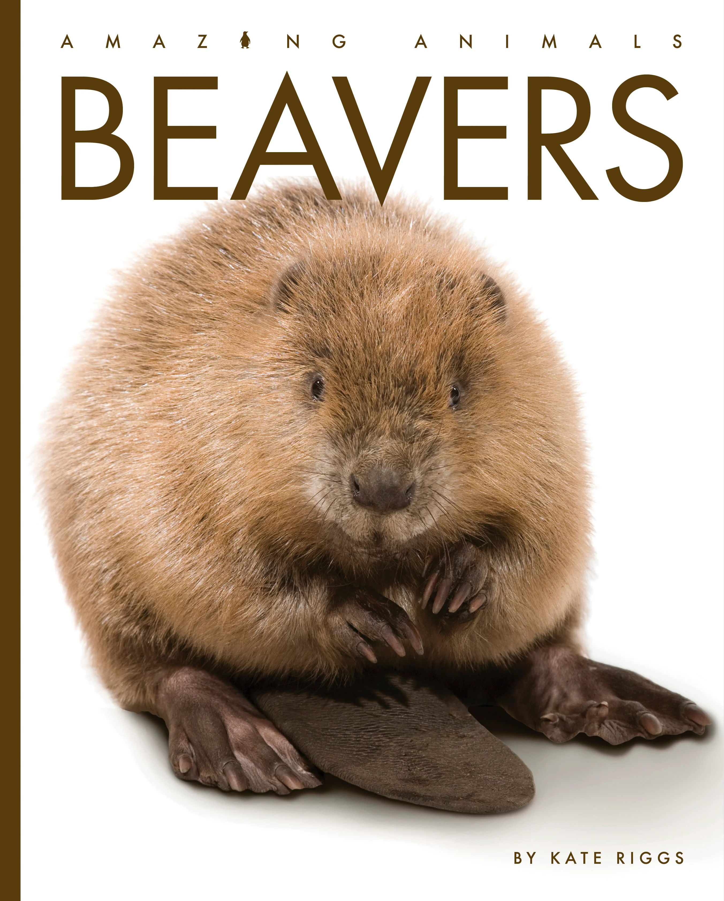
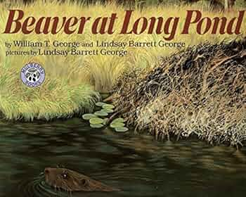
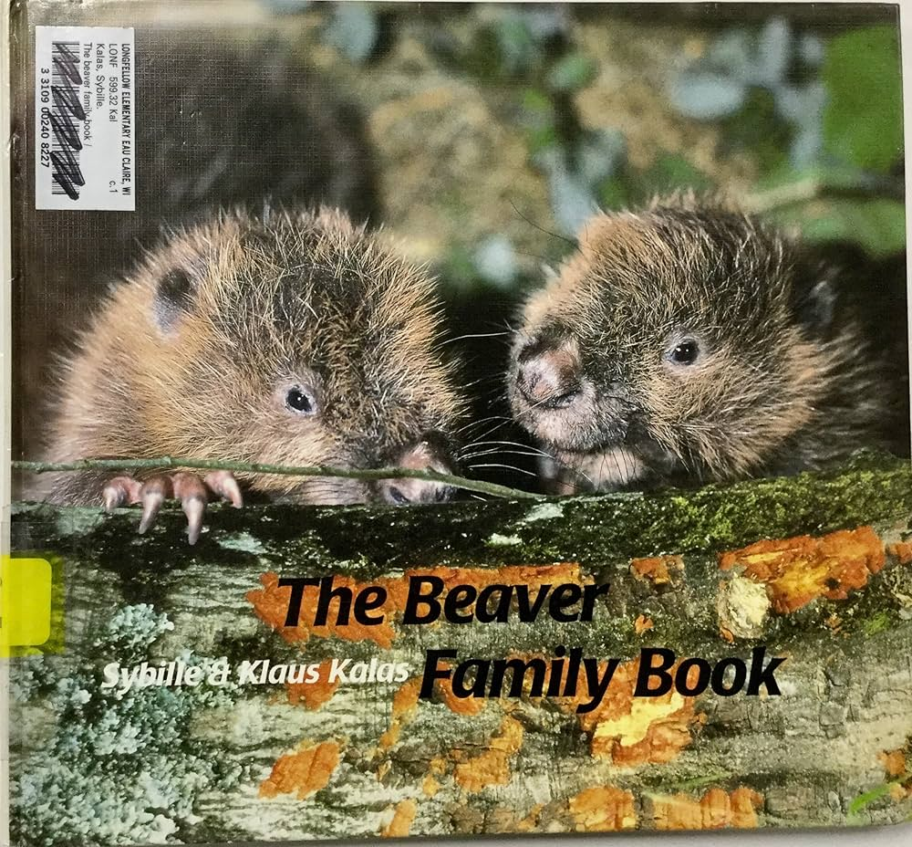
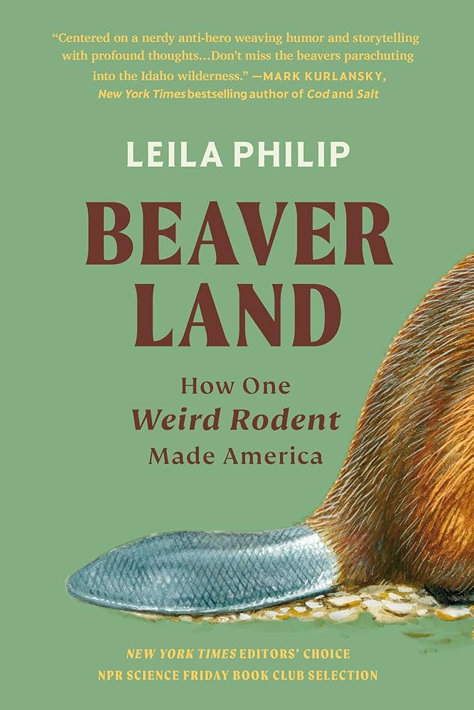
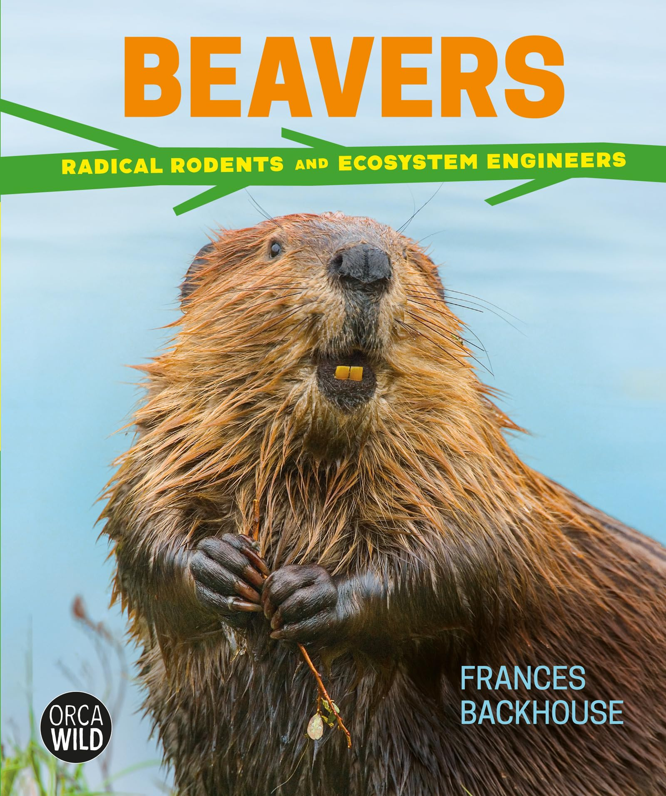
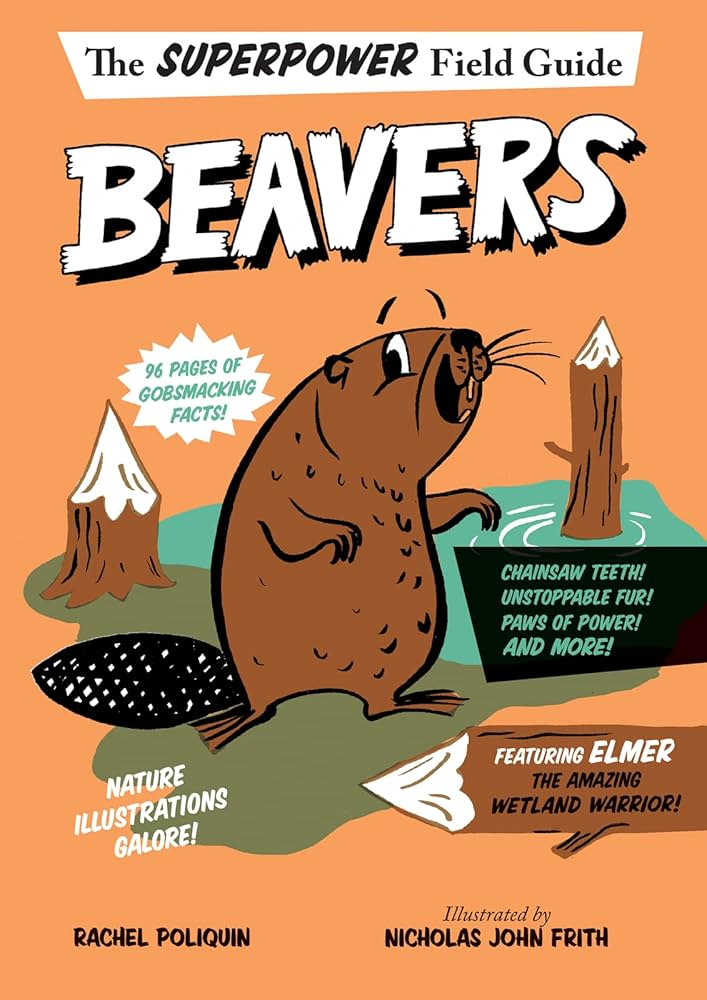
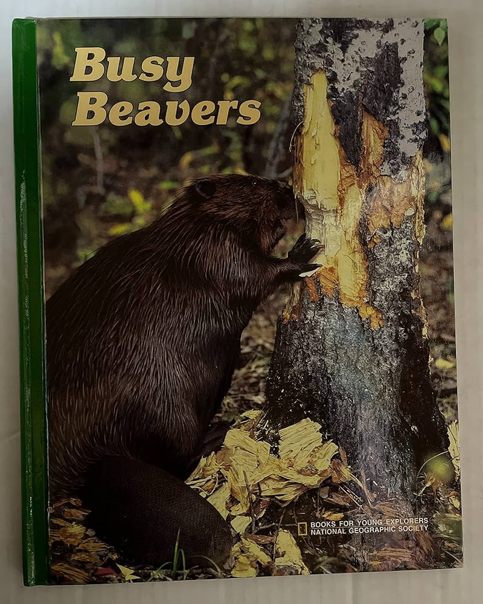
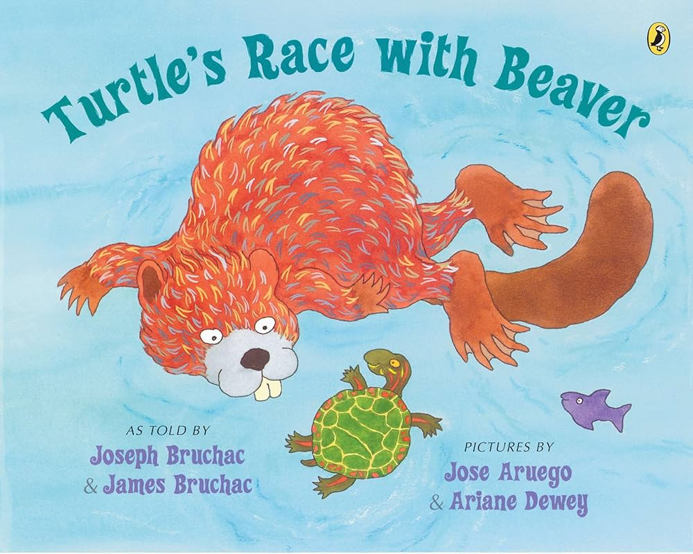

Amazing Books About Beavers!

Beavers Amazing Animals by Kate Riggs is a children's book that introduces young readers to the fascinating world of beavers. The book covers various aspects of beaver life, including their physical characteristics, behaviors, and the important role they play in their ecosystems. At the end of the book the author shares a Floridian folk tale on why beavers slap their tales on water.

Beaver at Long Pond by William T. George is a book that highlights the nocturnal habits of beavers by following a beaver’s activities in its habitat while most nearby animals are sleeping.

Beaver Family Book by Sybille and Klaus Kalas: These author/illustrators cared for three beaver kits during their first couple of years of life and featured their observations of the animals’ development through photographs and descriptions.

Beaverland, by Leila Philip, explores the deep connection between beavers and humans throughout history. The book delves into how beavers have influenced landscapes, cultures, and economies, highlighting their role as ecosystem engineers.

Beavers: Radical Rodents and Ecosystem Engineers by Frances Backhouse goes over many cool beaver facts and stories, specificaly going in depth to their near extinction and recovery.

This book by Rachel Poliquin follows the main character Elmer through his amazing beaver adventures. The book shares countless cool beaver facts all throughout the book.

This book by M. Barbara Brownell features many excellent photographs of beavers. The accompanying text is intended for younger readers.

Turtle’s Race with Beaver is an Iroquois tale retold by Joseph Bruchac.
This traditional Indigenous American folktale is the story of a selfish beaver who learned a lesson from a clever turtle after he tried to take ownership of a pond.